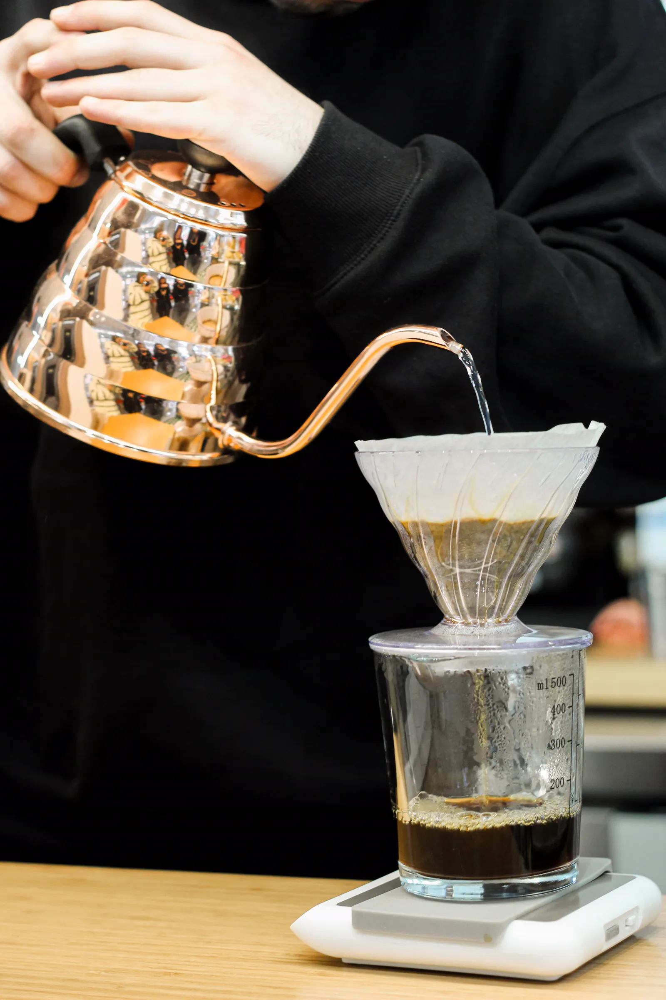
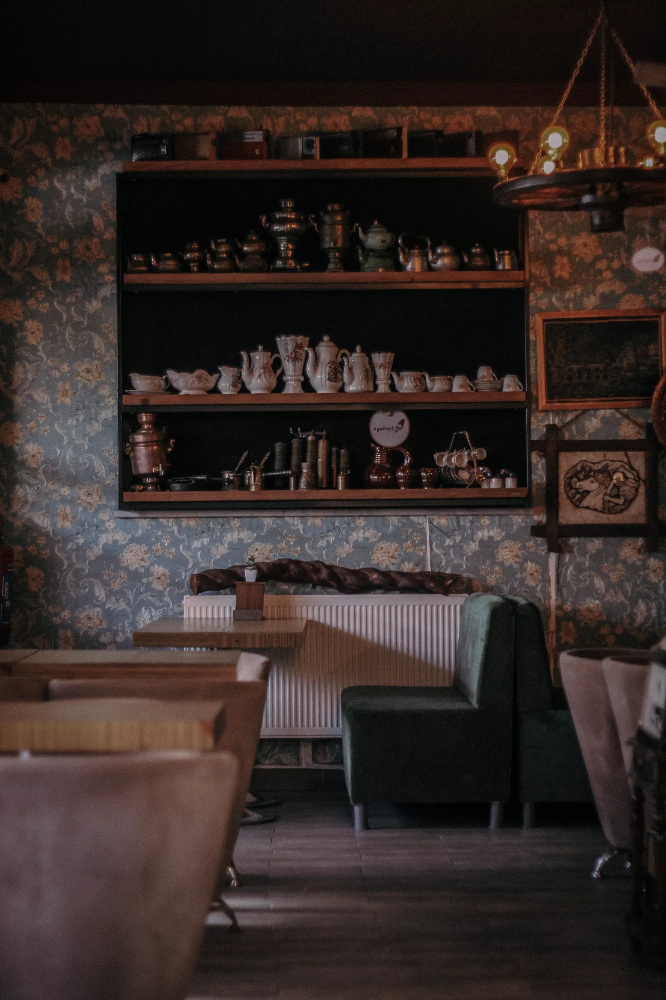

our philosophy
roast the quiet
私たちのこと
「おいしい」の前に、「落ち着く」があると思っています。CAFE AOKIは、コーヒーで一日に静かな余白をつくるための店です。そのために豆を選び、毎朝焼き、一杯ずつ淹れています。
the origin
from farm
from farm
to cup
産地とともに
豆は、年に数回、輸入商社のカッピング会に通って選びます。畑の名前まで分かる豆だけを、少量ずつ。
同じ豆でも、届くロットで味は変わります。だから毎回、小さく焼いて、確かめてから店に出します。
the roast
small batch,
small batch,
every morning
毎朝の小さな焙煎
店の奥の3kg釜が、うちの心臓部です。開店前のいちばん静かな時間に、その日の分だけを焼きます。
浅煎りは果実のように、深煎りは黒糖のように。豆ごとの「いちばん機嫌のいい顔」を探します。
one cup at a time
注文をいただいてから、一杯ずつハンドドリップで。お湯の温度は豆ごとに変えています。

01 選ぶ
カッピングで少量ずつ
02 焼く
3kg釜で毎朝

03 淹れる
92℃から豆ごとに

the keeper
the keeper
the keeper
of the beans
店主のこと
店主・青木。前職は音響の仕事でした。耳で選んでいたものを、いまは鼻と舌で選んでいます。
好きな焙煎度は「その日による」。カウンターで気軽に話しかけてください。